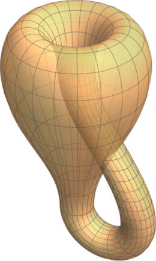
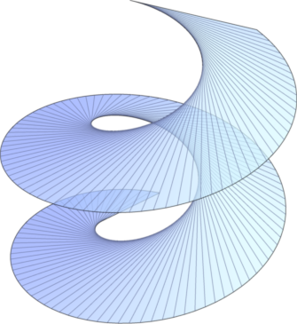
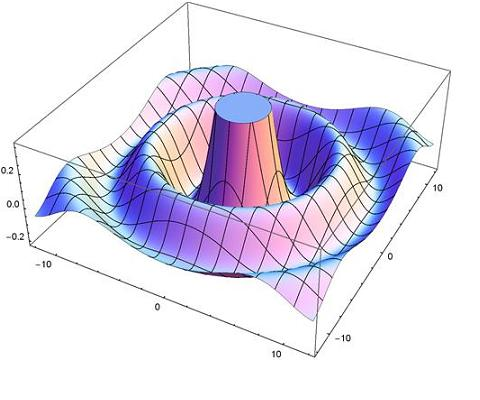

Teaching
This is my fourth year at the University of Glasgow, and I am currently teaching Maths 1 and Maths 2F: Groups, Transformations, and Symmetries, as well as the SMSTC Differential Topology course.
Before coming to the University of Glasgow, I had taught courses at Binghamton University, Cornell University, Texas A&M University, Bard College, and the University of St Andrews. This page describes some of my teaching experience and has links to the teaching materials for some of the courses I have taught.
Undergraduate Projects
Every undergraduate mathematics major at Bard College is required to do a year-long original research project during their senior year. While at Bard I supervised 24 such projects, covering a wide variety of topics. See here for a list of these projects:Dynamical Systems
I designed an undergraduate dynamical systems course at Bard College which I taught on five occasions. The course focused on chaotic dynamical systems and fractal geometry, and was suitable for students who had taken a course in linear algebra with ordinary differential equations. It had a heavy emphasis on the computational and experimental aspects of the subject, and students spent much of their time learning to use Mathematica to explore the behavior of dynamical systems and visualize fractal sets. The following web page has further information about this course:Measure Theory
I designed a measure theory course at Bard College for advanced undergraduates, which I taught twice as a regular class and four times as an independent study for one to three students. The course covered advanced analysis including measure theory and Lebesgue integration, with an introduction to Banach spaces and Hilbert spaces and applications to Fourier series, convolutions, and probability theory. The following web page has further information about this course:Differential Geometry

I developed an undergraduate differential geometry course at Bard College which I taught on two occasions. The course required only multivariable calculus as a prerequisite, and most of the students who took the course were junior or senior math or physics majors. The course content focused heavily on vector geometry and parametrizations while also covering classical differential geometry of curves and surfaces. The following web page has further information about this course:Number Theory
I designed and taught an upper-level number theory course at Bard College in the spring of 2016. Students in the course were required to have programming experience and implemented cryptographic and number-theoretic algorithms such as RSA encryption, Diffie-Hellman key exchange, and the Fermat and Lucas–Lehmer primality tests. The course also had a strong theoretical component, and we covered elementary number theory, quadratic reciprocity, field extensions, the classification of finite fields, and the proof of quadratic reciprocity using Gauss sums. The following web page has further information about this courseMathematical Modeling
I designed and taught a mathematical modeling course at Bard College in the fall of 2016. The course focused on modeling with ordinary differential equations and difference equations, and we explored applications to growth of organisms and allometric laws, population dynamics, HIV modeling, and climate modeling. The following web page has further information about this course
Calculus & Linear Algebra
I taught my first calculus class at Binghamton University in the spring of 1999, and I have since taught calculus and linear algebra courses at Cornell University, Texas A&M University, and Bard College. Here is some information about my Calculus I class:Secret Codes
I designed and taught a cryptology course for liberal arts students in the spring of 2015. Students in the course make heavy use of computers, specifically Microsoft Excel, to decode encrypted messages.Advanced Calculus
I designed and taught an advanced calculus course at Bard College in the fall of 2016. The course focused on the derivative as a linear transformation, parameterization of manifolds, and integration on manifolds.Topology
I taught a 300-level topology course at Bard College on two occasions. This course served as an introduction to both point-set and algebraic topology, and most of the students in the class were junior or senior math majors.First-Year Seminar
I taught the second semester of the first-year seminar at Bard College in the spring of 2017. This is the “great books” course that Bard requires of all students, and I led student discussions and graded student essays on the following works:- “Self-Reliance” by Ralph Waldo Emerson
- Nicomachean Ethics by Aristotle
- On the Genealogy of Morals by Friedrich Nietzsche
- Confessions by Augustine
- The Autobiography of Malcolm X
- Prometheus Bound by Aeschylus
- Frankenstein, or The Modern Prometheus by Mary Shelley
- Selected works of Sor Juana Inés de la Cruz
- Portrait of the Artist as a Young Man by James Joyce
- Selections from History's Greatest Speeches

Abstract Algebra
I taught a one-semester Abstract Algebra course a Bard College on three occasions. I used Gallian's book for this course which I supplemented with additional material on automorphisms of graphs, matrix representations of groups, etc.Real Analysis
I taught a one-semester Real Analysis course at Bard College on two occasions.Physics
I twice taught the second-semester introductory physics course at Bard College, which included running weekly laboratory demonstrations and experiments for students. The course covered electricity, magnetism, and optics.Proofs & Fundamentals
I taught Proofs & Fundamentals at Bard College in the fall of 2010. This course is an introduction to formal proofs, logic, and set theory, and is usually taken by sophomore math majors.Problem-Solving Seminar
I supervised the 2-credit mathematics problem-solving seminar at Bard College in the fall of 2009.Senior Projects
All students at Bard College complete a year-long research project during their senior year. From 2009 to 2018, I supervised 24 such projects, covering a wide variety of topics. Projects marked with a star (*) are directly related to my research.
- 2018
- *Yuan Liu, “Graph Replacement Systems for Julia Sets of Quadratic Polynomials”
- *Rachel Nalecz, “An Implementation of the Solution to the Conjugacy Problem on Thompson’s Group \(V\)” (with Robert McGrail)
- 2017
- *Karuna Sangam, “Homeomorphisms of the Sierpiński Carpet”
- Avery Morris, “From Random to Organized: The Architecture of Neural Networks During Development”
- 2016
- *Cyril Kuhns, “Public-Key Cryptography with the Brin-Thompson Group \(2V\)” (with Robert McGrail)
- *Sarah Ghandour, “Random Walks on Thompson’s Group \(F\)”
- Nicole Song, “A Variational Approach to the Moving Sofa Problem”
- 2015
- *Shuyi Weng, “Homeomorphism Groups of Fractals”
- Van Mai Nguyen Thi, “Development and Optimization of a Two-View Model for Anamorphic Projections on Planar Surfaces” (with Keith O'Hara)
- Sharma Maharaj, “Resistance of Infinite Networks”
- 2014
- Andy Huynh, “Geometry of Adinkra Embeddings” (with Greg Landweber)
- Lara Merling, “Fighting Fires on Semi-Regular Tessellations” (with Lauren Rose)
- 2013
- Abhinanda Bhattacharyya, “Forbidden Minors for a Pursuit Game on Graphs”
- *Nabil Hossain, “Implementation of the Solution to the Conjugacy Problem in Thompson's Groups” (with Robert McGrail)
- *Will Smith, “Thompson-Like Groups for Dendrite Julia Sets”
- *Jasper Weinrich-Burd, “A Thompson-Like Group for the Bubble Bath Julia Set”
- 2012
- Kimberly Wood, “Switching the Shannon Switching Game”
- Zhiwei Wu, “Computable Invariants for Quandles” (with Robert McGrail)
- 2011
- *Adam Chodoff, “Twisted Three-Eared Rabbits: Identifying Topological Quadratics up to Thurston Equivalence”
- Alexandros Fragkopoulos, “Electron Scattering in Crossed Electric and Magnetic Fields: A Semiclassical Study” (with Christian Bracher)
- 2010
- *Cedric Cogell, “Finding Følner Sets Automatically”
- Huaizhou Jin, “SLAM on a Graph through Recursive Filtering”
- 2009
- Paul McLaughlin, “Chaos in Bird Vocalizations”
- *Nick Michaud, “A Three-Element Generating Set for Thompson's Group \(F\)”